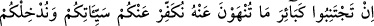
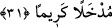
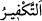
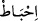

beslenip avlanacak kadar güçlendiğidir.” diye cevap vermesi geldi.
İşte senin kendi atının üzerinde avladığın bu ceylan her ne kadar bir av ise de bu atın
yemi hangi mazlumun arpasından alındı kimbilir?” dedi ve ceylanı yemedi.
Anlatılır ki bir terzi büyüklerden birine: “Acaba elbiselerini dikerek zâlimlere
yardımcı olmuş oluyor muyum?” diye sordu. O da şöyle cevap verdi: “Burada üzerinde
durulması gereken sen değil, bu iğneyi îmal eden demircidir.”
Hâsılı her ne kadar günümüzde nadir ve ulaşılması çok zor bir haslet olsa da helal
rızık talebinde ihtimam göstermek lâzımdır.
Câmî (k.s.) şöyle diyor:
İstersin ki olasın helal rızıklı
O zaman dikkat et, olma çok ıyalli
Bilirsin ki bu dar-ı dünyâda
Helal rızık bulunmaz çok fazla.
Allah Teâlâ cümlemize fazl u kereminden ihsân eylesin. Çünkü O, çok cömerttir.
31- Eğer yasaklandığınız büyük günahlardan kaçınırsanız sizin küçük
günahlarınızı örteriz ve sizi şerefli bir yere sokarız.
“Eğer yasaklandığınız”, yâni Allah ve Rasûlü’nün size yasakladığı “büyük
günahlardan” uzak durur, “kaçınırsanız sizin küçük günahlarınızı,” seyyiâtınızı
“örteriz” yok eder, yâni bağışlarız.
“İctînâb,” uzaklaşmak demektir. Ecnebî kelimesi de buradandır. “__WORD__, müstehak
olunan cezânın daha fazla bir sevâbla yâhut tevbeyle yok edilmesidir. “__WORD__ ise bunun
zıddıdır. Kazanılanın, daha fazla bir cezâ ya da yaptığı hayırlara pişman olma yüzünden
yok edilmesi demektir. “Ve sizi şerefli” güzel ve râzı olunan, “bir yere”, cennete
ikramda bulunarak “sokarız.”
Rasûlullah (s.a.v) şöyle buyurmuştur: “Büyük günahlardan uzak durulursa bir
namaz öteki namaza kadar, bir cuma öteki cumaya kadar bir ramazan öteki ramazana
kadar olan küçük günahlara keffâret olur.”[7]
Büyük günahlar hakkında ihtilaf edilmiştir. Doğruya en yakın olan görüşe göre büyük
günah, Allah Teâlâ’nın hakkında had cezâsı koyduğu ya da cezâlandırmakla tehdit ettiği
günahlardır.
Enes b. Malik (r.a.) şöyle diyor: “Bugün siz öyle ameller yapıyorsunuz ki bunlar sizin